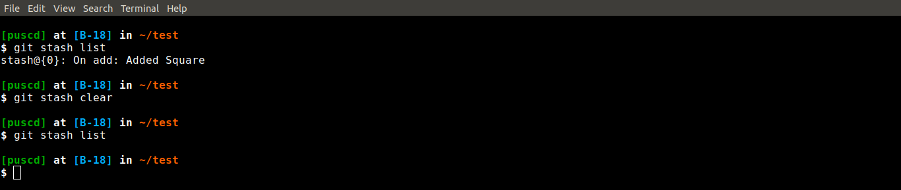

Git Stash
Hope you guys are doing good in Lockdown by self Qaurantining youself. So, Lets start learning git stash.Suppose you are working on a file and because of some reasons you want to save your changes and go back to the files where you had last changes or last commit. Then the question is how to save them?
Well git has functionality by which you can save the changes and later pop it up when you need it. So here it is...
Suppose I'm working on add file and I made changes to it and I'm going to save those changes.
First I will create branch git branch add and checkout to my add branch by git checkout add then I will open test1.py and update it my making changes into add function. You can check the changes by doing git diff
And here is main thing that you are going to do: git stash save "looked in for add function" and here it worked type git diff and git status you will see that nothing is left to commit and changes to the file that were made previoulsy have been restored.
 Now all the changes are gone into stash and you can see that stash list by git stash list here you will see all the stashes list that you have made yet.
Now all the changes are gone into stash and you can see that stash list by git stash list here you will see all the stashes list that you have made yet.
Here each stash has its Id stash@{0}: in this case '0' and after that there is msg for what you made that changes to stash. Now I'm going to take back these changes to my file. There are to ways to do: git stash apply stash@{0}: and after this you will all your changes that you put them into stack have been reverted.
But the thing is if you do git stash list that stash is still there and you wont get rid of that.
So the another way of doing it is instead of doing git stash apply stash@{0} just do git stash pop this will apply the changes of first stash that is in the list and it is going to drop/remove that stash permenently from list. You can do that by git stash pop. You can recheck that by git stash list and changes have been applied to file. Check them by git diff
Check them by git diff
Now we have multiple stash into stash list then which one will pop first?
Here I have added to changes to the stack and I'm going to pop from them. git stash pop You can see it will pop last saved stash same as
You can check about popped stash by git diff.
Now how long you will put that changes in stack what if you want to delete it? Use git git stash drop stash@{0}
and if you want to clear all the stash list then do git stash clear
At the end you can check the status of your current branch :
Here was the brief overview of how to use stash and how it is useful.Thank You.